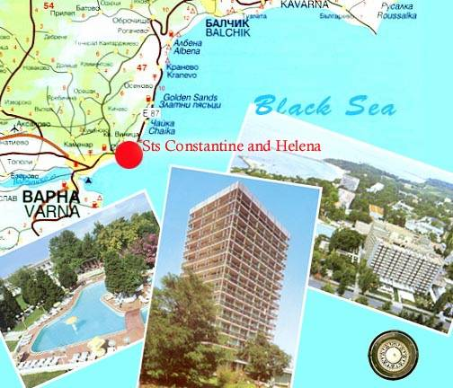

Location of the ACA 2006 Conference
The ACA 2006
Conference will take place in the International Home of Scientists (IHS)
"Frederic Joliot-Curie", located in the resort “St. Constantine and
Helena” near

The International Home of Scientists and its
surroundings.
(http://www.usb-bg.org/English/hause.htm)
The resort St. Constantine and Helena (most often called St. Constantine) is the oldest Bulgarian
At the middle of the
resort stands the International Home of Scientists (IHS) boring the name of
Frederic Joliot- Curie. For over thirty years it has been a gathering point for
scientists from all over the world offering good opportunities for meetings, congress tourism and nice vacations.
The home provides
five multifunctional conference rooms meeting all international requirements.
The home meets all requirements
of a three stars hotel.
The restaurant of
the home has a great variety of specialties from the Bulgarian and
international cuisine.
The center of
balneology in the IHS provides the following facilities and services: covered
pool with mineral water (free of charge), fitness hall ( also free of charge),
sauna, manual and water massage, water therapy procedures such as: mineral,
herb, pearl and cosmetic bath tubs, electrical therapy, inhalations,
acupuncture, manual therapy.
The IHS has its own
beach.